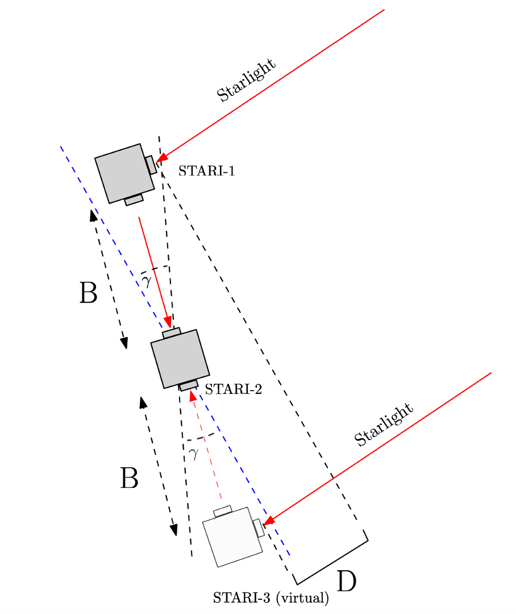
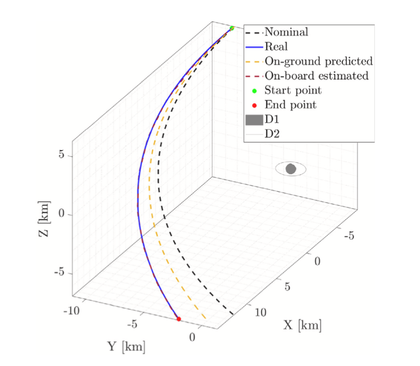
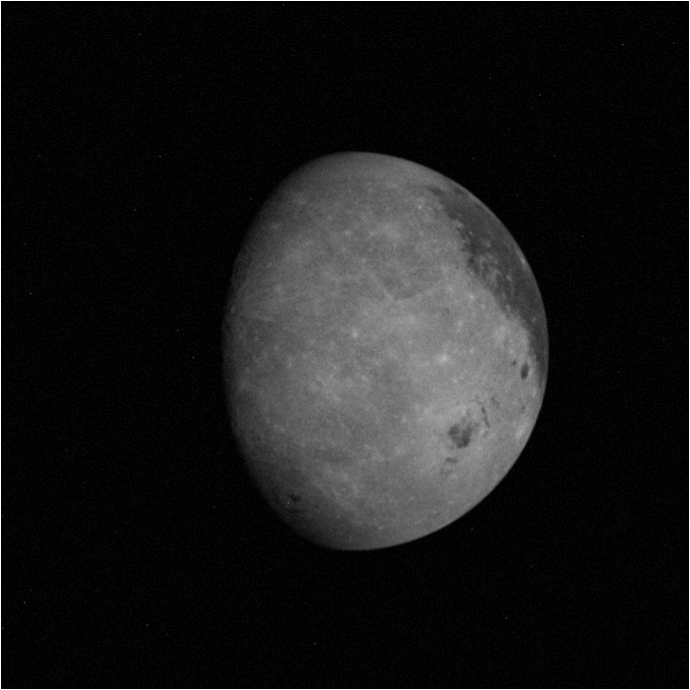
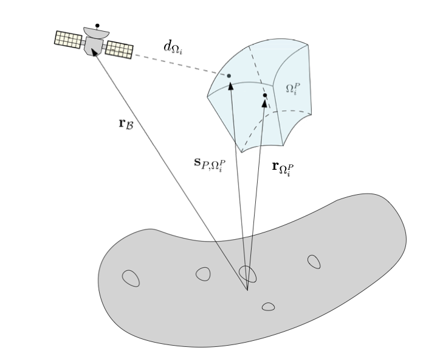

Antonio Rizza
Postdoctoral Researcher · Stanford University

Postdoctoral Researcher · Stanford University
I am a Spacecraft Guidance Navigation and Control (GNC) Engineer with experience in modeling, simulation and testing of dynamical Space Systems, spacecraft autonomy, precise formation flying and astrodynamics. Leveraging seven years of research on autonomous space robotics probes, I had leading GNC roles for both Low Earth Orbit (LEO) and deep-space missions sponsored by national and international agencies across Europe and the United States. At Stanford, I am currently focused on enabling and flight testing ground breaking GNC technologies for the next generation of distributed space systems. I have been GNC Engineer for the Milani, LUMIO, and STARI missions.






Reach out by email, connect on LinkedIn, or download my CV.